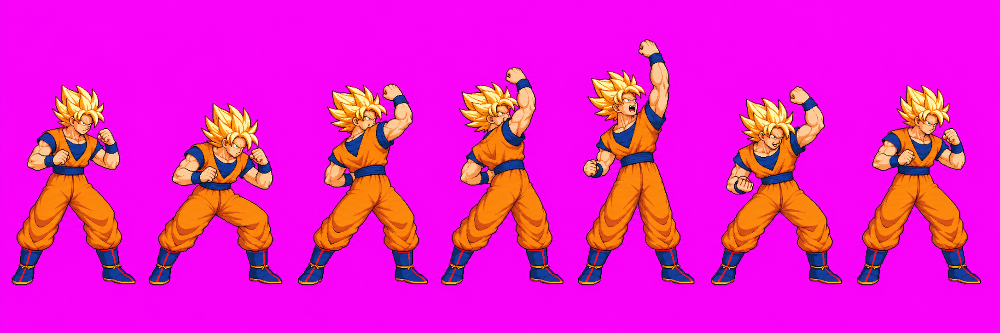
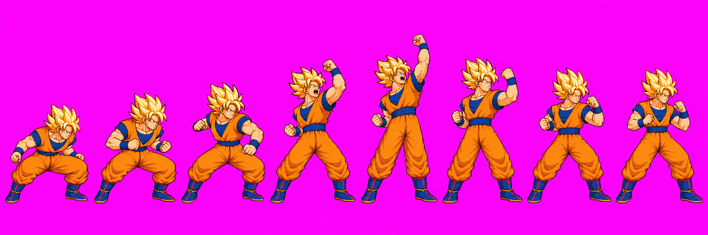
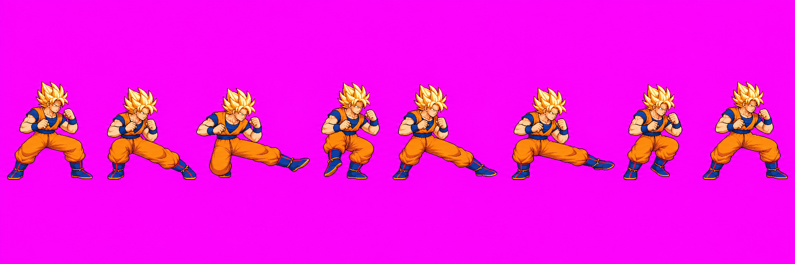
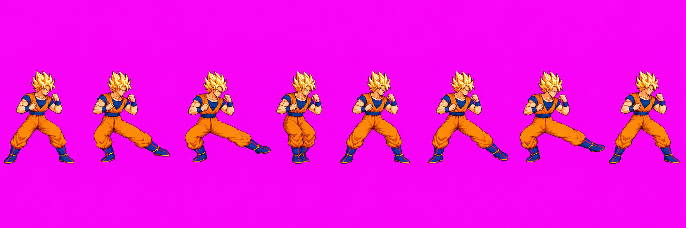
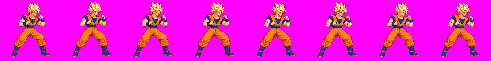

Goku directional normals — redraw review r2
This page shows the best available outputs from the single redraw round authorized in combat relays #41–#42. These drawings are not user-approved. The packed frames are a diagnostic 48-color atlas built with a temporary probe bypass so Astra could inspect the actual cells; it is not a shipping pack.
Technical status: HOLD on all three. Astra found uTilt v03 and uSmash v03 materially smaller than approved idle02 after fitting the full overhead pose into a 256px cell. dSmash v03 remains oversized, its bilateral strike is not clear in the active window, and one frame is too wide for the four-pixel margin. No new image calls remain in this round. The review page is for the user's next direction, not approval.
uTilt v03 — phases 3/2/2
A rising near-arm uppercut. Active frames: 3–4 (zero-based 3 and 4).
Astra: HOLD. Guard silhouette is about 176px tall versus idle's 213px; head width is 44–47px versus 53–56px. Raising the import scale would risk clipping the overhead pose. Astra's contact boxes for the diagnostic cells: frame 3 [131,47,20,20], frame 4 [131,23,21,20].

uSmash v03 — phases 3/2/3
Crouch into a rising uppercut. Active frames: 3–4 (zero-based 3 and 4).
Astra: HOLD. Head width is about 42–46px and the face, arms, and torso remain smaller than idle across the strike and guard. Contact boxes for the diagnostic cells: frame 3 [141,55,22,22], frame 4 [146,23,22,22].

dSmash v03 — phases 3/2/3
Low bilateral shin sweep. Active frames: 3–4 (zero-based 3 and 4).
Astra: HOLD. The selected version has hair about 69–71px wide versus idle's 53–56px. Frame 3 shows a bent, foreshortened left kick rather than a clear extended sweep; frame 4 has a clear rightward boot. The current offset leaves the rightmost opaque pixel at x=255, outside the four-pixel margin; no offset alone can fit this width. Astra's diagnostic contact boxes: frame 3 [76,188,43,50], frame 4 [193,195,50,43].

Alternative attempt 3 (not packed)
This attempt has closer guard proportions, but every extended kick points screen-right; it does not meet the requested bilateral sweep.

Reference and audit
Approved idle02 reference:

Astra's exact-cell inspection found no separate material color-boundary or disconnected-limb defect. Hidden joints were not used as hold reasons. Width uncertainty was ±2–3px for the head and roughly ±5–7px for clothing-covered torso/limb endpoints. Full generation receipts and the diagnostic atlas remain in the branch under art/characters/goku/.
Response requested through Claude 0 - Approvals: authorize another round, specify which moves to revise, or choose another approach. This page does not record approval.